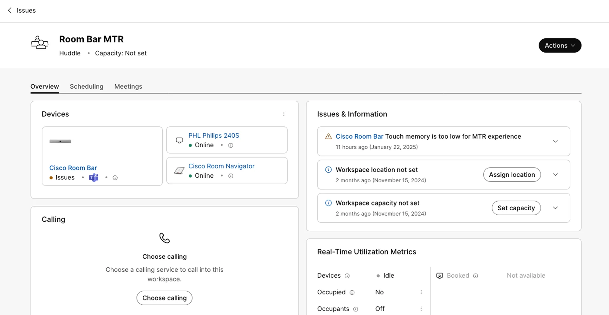
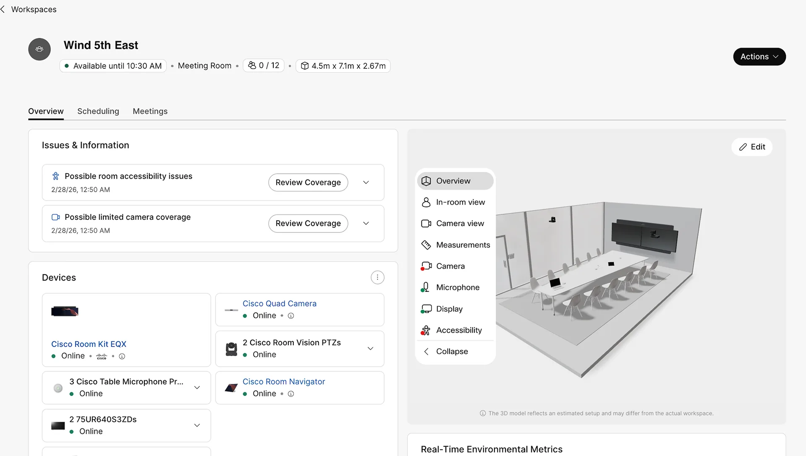
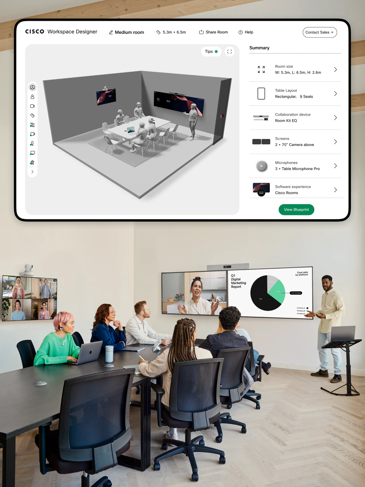
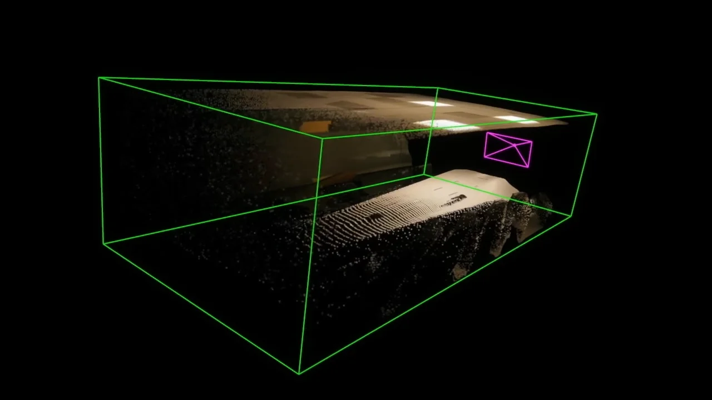
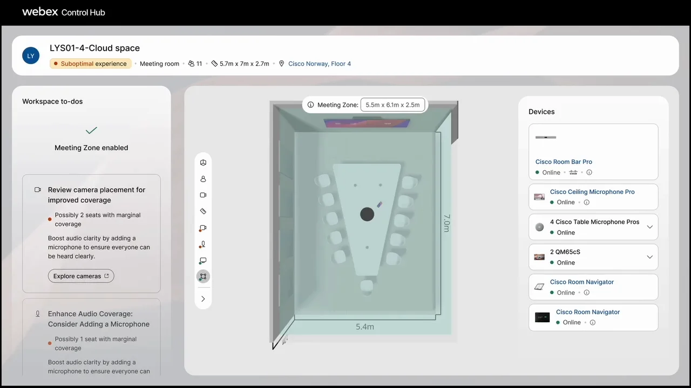

A digital twin of meeting rooms, so IT admins can fix them remotely.
Role
Lead Product Designer
Product direction
Digital twin integration
AI room scanning UX
Challenge
IT admins manage meeting rooms they rarely visit. When a room underperforms, a device list is all they have. It can't show what's wrong in the room, or how to fix it.
How might we help admins picture a room they can't visit?

01Before: the device list

02Show the room, not the device data

03Workspace Designer models + live Control Hub data


04Room scanning: the device camera rebuilds the room
Learnings
Seeing beats reading.
Admins understood a room's problems faster in 3D than in a device list.
Recognition builds trust.
Admins act on a twin that looks like their room, so scanning builds it for them.
Scanning needs care.
It uses the room's own cameras, so every scan must be clear and expected.
I'm now bringing this approach to onboarding, troubleshooting and optimization.